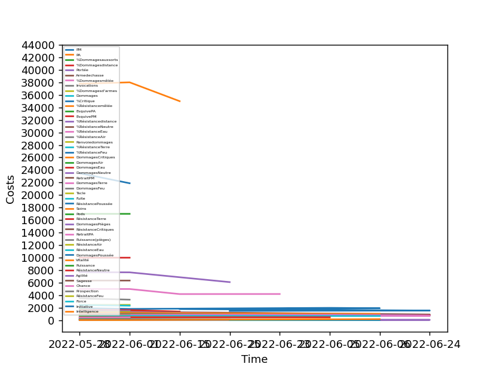

{% extends 'base.html' %}
{% block title %}
    Stats Page
{% endblock %}
{% block content %}
    <button onclick="save_and_reload()"><svg xmlns="http://www.w3.org/2000/svg" width="16" height="16" fill="currentColor" class="bi bi-arrow-clockwise" viewBox="0 0 16 16">
        <path fill-rule="evenodd" d="M8 3a5 5 0 1 0 4.546 2.914.5.5 0 0 1 .908-.417A6 6 0 1 1 8 2v1z"/>
        <path d="M8 4.466V.534a.25.25 0 0 1 .41-.192l2.36 1.966c.12.1.12.284 0 .384L8.41 4.658A.25.25 0 0 1 8 4.466z"/>
      </svg></button>
    
{% endblock %}
{% block javascripts %}
    <script>
        function save_and_reload()
        {   
            eel.save_graphic()
            location.reload()
        }
    </script>
{% endblock %}